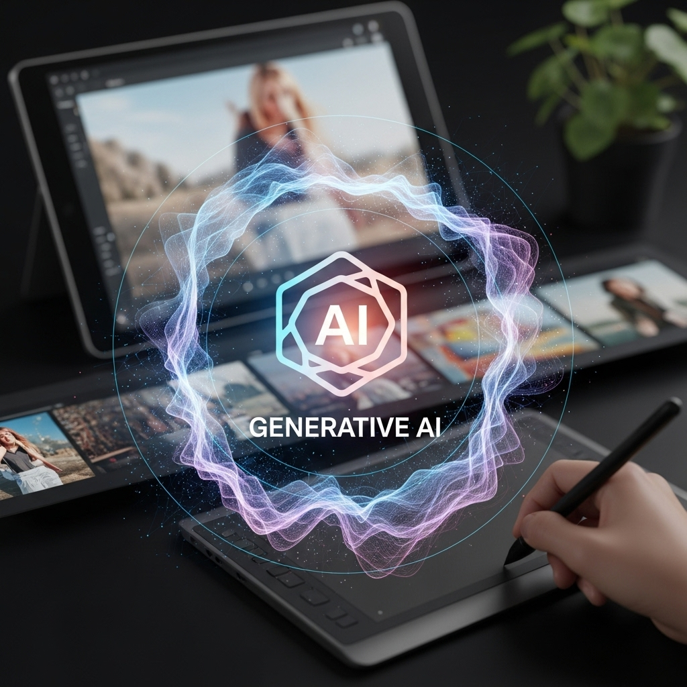
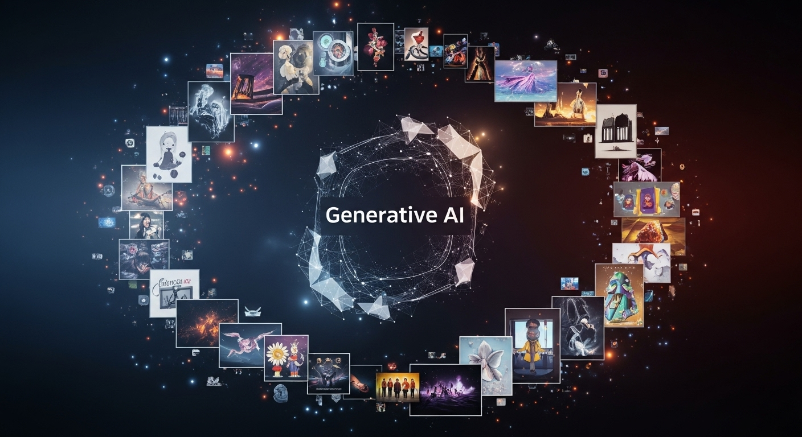
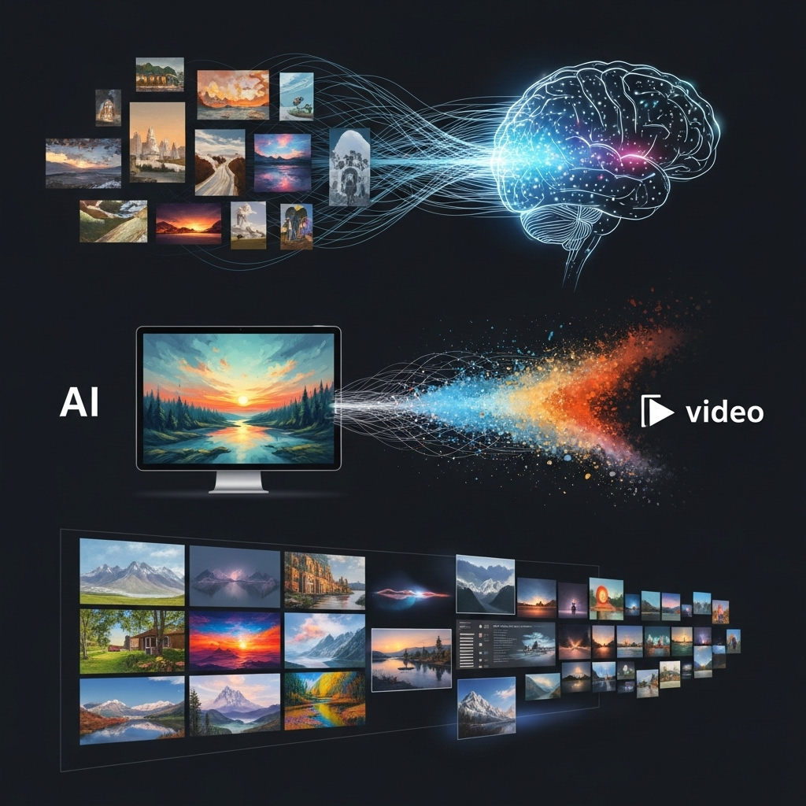
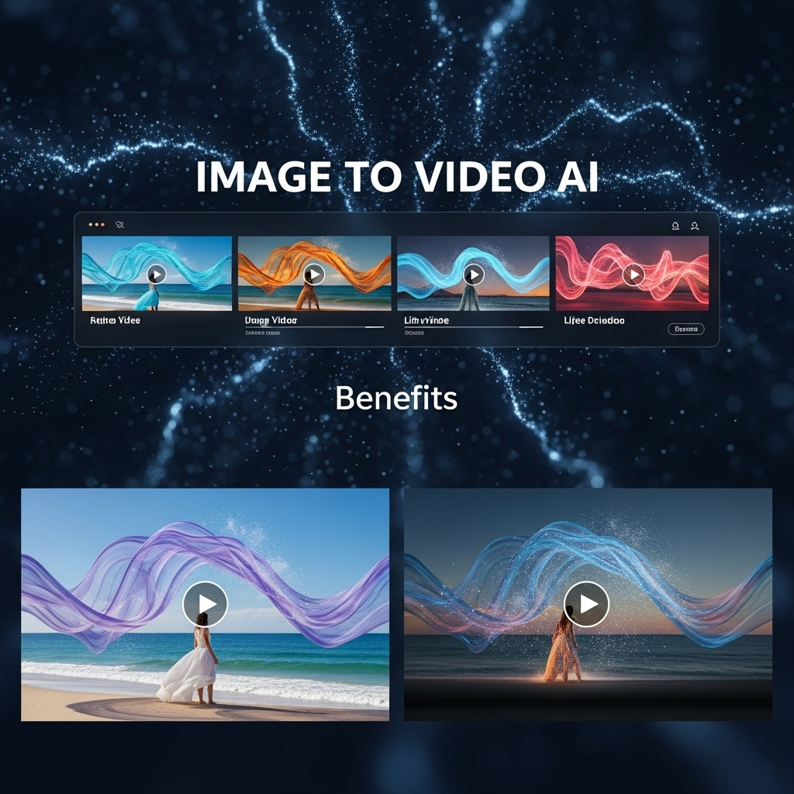
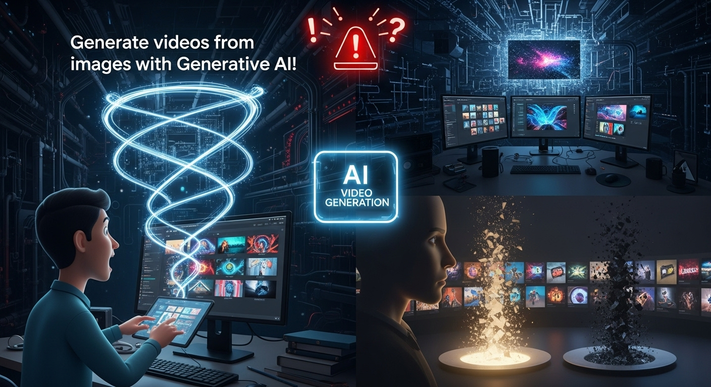
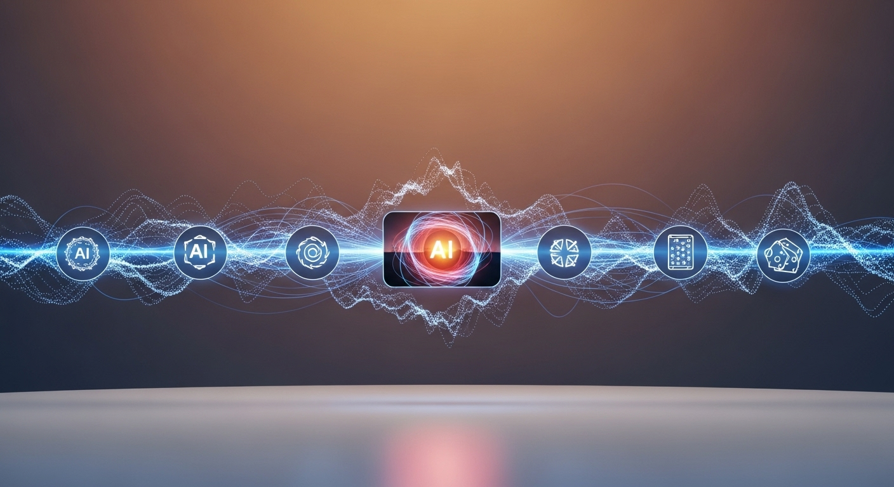
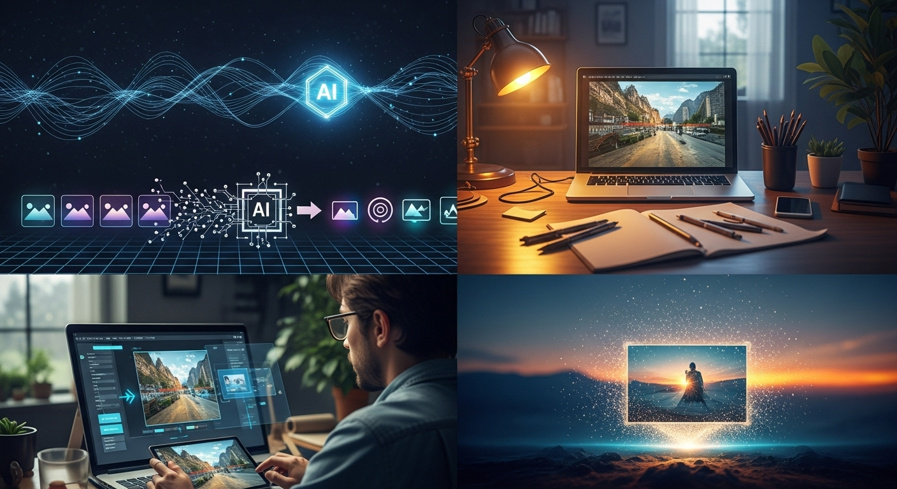
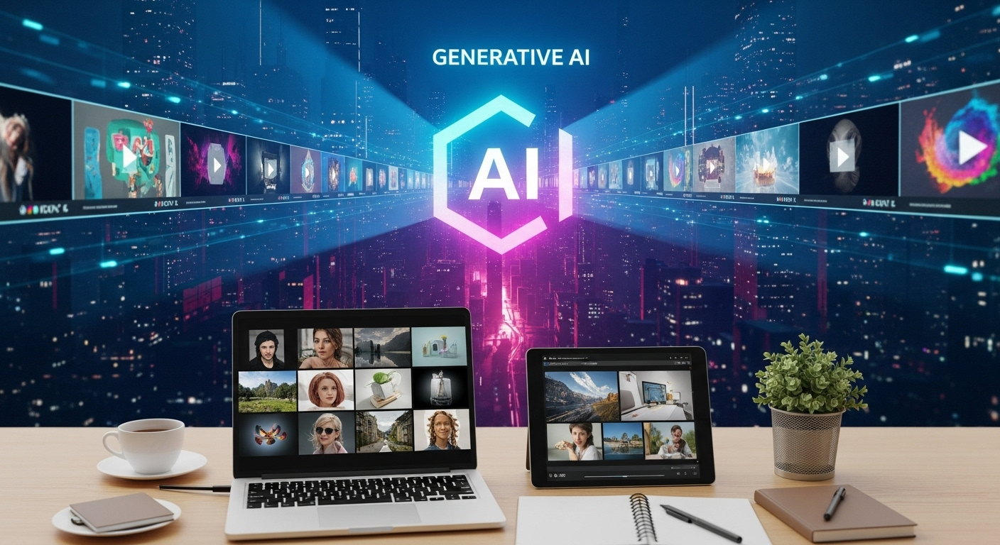

生成AIで画像から動画生成！デザイナーが活用すべき実践ガイド

導入

デジタルクリエイティブの世界は、日々目覚ましい進化を遂げています。特に近年、生成AI（Generative AI）の登場は、デザイナーの仕事のあり方を大きく変えようとしています。これまで高度な専門知識と時間を要した作業が、AIの力を借りることで、より手軽に、より迅速に、そして何よりも創造的に実現できるようになりました。その中でも、静止画である「画像」から、生命を吹き込むかのように「動画」を生成する技術は、多くのデザイナーにとって計り知れない可能性を秘めています。
この革新的な技術は、単に作業を効率化するだけでなく、デザイナーの表現の幅を飛躍的に広げ、これまで想像もしなかったようなクリエイティブな挑戦を可能にします。しかし、新しい技術には常に期待と同時に、どのように活用すれば良いのか、どのような点に注意すべきかといった疑問がつきものです。
本記事では、生成AIを用いた画像から動画生成の基本から、そのメリット、そして活用における課題と注意点まで、デザイナーの皆さまが実践的に活用するためのガイドとして、丁寧にご紹介してまいります。おすすめのAIツールや具体的な実践手順、さらにはフリーランスのデザイナーがこの技術をどのように仕事に活かせるかといった具体的な活用事例まで、幅広く深く掘り下げて解説します。
AIは、もはや遠い未来の技術ではありません。私たちのすぐそばにあり、日々のクリエイティブワークを豊かにする強力なパートナーとなり得る存在です。このガイドを通じて、生成AIがもたらす新たな表現の可能性を発見し、皆さまのデザイナーとしてのキャリアをさらに輝かせる一助となれば幸いです。落ち着いたトーンで、しかししっかりと、優しく親しみやすい雰囲気で、この新しいクリエイティブの扉を開いていきましょう。
生成AI画像から動画生成とは？基本と活用メリット

生成AIによる画像から動画生成は、現代のデジタルクリエイティブシーンにおいて、最も注目される技術の一つです。静止している一枚の画像に、まるで魔法をかけるかのように動きと生命を吹き込み、新たな物語を紡ぎ出すこの技術は、多くのデザイナーにとって、表現の可能性を無限に広げる画期的なツールとなり得ます。ここでは、その基本的な仕組みから、なぜ今この技術がこれほどまでに注目されているのか、その核心に迫ります。
画像から動画生成AIの仕組みと進化
画像から動画を生成するAIは、一見すると非常に複雑な技術のように思えるかもしれません。しかし、その根底にあるのは、AIが膨大な量の画像データと動画データを学習し、それらの関係性を理解することで、静止画から自然な動きを予測・生成する能力です。
初期の動画生成技術としては、複数の静止画を連続して表示するGIFアニメーションや、特定の要素に限定的な動きを加えるモーションブラーといった手法がありました。これらは主に、人間が一つ一つのフレームや動きの軌跡を設計する必要があり、制作には多大な時間と労力を要しました。
しかし、近年の生成AI、特に「拡散モデル（Diffusion Model）」や「GAN（GenerGenerative Adversarial Networks）」といった技術の発展は、この状況を一変させました。これらのモデルは、与えられた画像やテキストプロンプト（指示文）から、その内容に合致する動画コンテンツを、AI自身がゼロから創造する能力を持っています。
例えば、拡散モデルは、ノイズから徐々に画像を生成していく過程を応用し、静止画に時間軸のノイズを加えることで、その画像がどのように変化していくかを予測し、動画として出力します。これにより、単なる静止画の拡大・縮小やパンといった機械的な動きだけでなく、被写体が自然に呼吸するような動きや、背景がゆっくりと移り変わるような、より有機的で複雑な動きを生成することが可能になりました。
具体的には、RunwayMLの「Gen-1」は参照となる動画のスタイルを別の動画に適用するスタイル転送に長け、「Gen-2」はテキストや画像から直接動画を生成する能力を持っています。また、StabilityAIの「Stable Video Diffusion」のように、オープンソースで提供されるモデルは、世界中の開発者やデザイナーが自由にカスタマイズし、新たな応用を模索できる土壌を提供しています。これらの技術的ブレイクスルーにより、これまで専門の映像クリエイターにしかできなかったような高品質な動画制作が、より多くの人々の手に届くようになったのです。
この進化の速度は驚くべきもので、AIは単に与えられたタスクをこなすだけでなく、まるで人間のクリエイターのように、創造的な解釈を加えて動画を生成する能力を高めています。これにより、デザイナーは、自身のアイデアを具現化する新たな手段を手に入れ、静止画では伝えきれなかった感情や物語を、動きのある表現で伝えることが可能になりました。
なぜ今、画像から動画生成AIが注目されるのか？
画像から動画生成AIがこれほどまでに注目を集めるのには、いくつかの明確な理由があります。現代のデジタル社会において、動画コンテンツの需要が爆発的に増加していることが、その最大の背景にあります。
まず、動画コンテンツの需要増大が挙げられます。SNS（Instagramのリール、TikTok、YouTubeショート、Xの動画投稿など）、Webサイト、デジタルサイネージ、オンライン広告、eコマースの商品紹介ページなど、あらゆるプラットフォームで動画が主要な情報伝達手段となっています。動画は静止画に比べて、より多くの情報を短時間で伝え、視聴者の感情に訴えかけ、強い印象を残すことができるため、エンゲージメントの向上に不可欠な要素となっています。企業も個人も、効果的なコミュニケーションのために動画コンテンツを求める傾向が強まっています。
しかし、従来の動画制作には、高額なコストと時間的制約が常に伴いました。専門的な撮影機材、照明、音響設備、そして高度な動画編集スキルを持つ人材が必要です。企画、撮影、編集、VFX（視覚効果）など、各工程に多くの時間とリソースを割く必要があり、特に小規模な企業やフリーランスのデザイナーにとっては、気軽に手を出せる領域ではありませんでした。この制作における高いハードルが、多くのクリエイティブなアイデアの実現を妨げてきました。
そこに登場したのが、画像から動画を生成するAIです。この技術は、従来の制作プロセスにおける障壁を劇的に低減し、AIによる効率化と民主化を推進しています。デザイナーは、既存の静止画アセットや、自身が作成したデザイン画を基に、テキストプロンプトを少し加えるだけで、数分から数時間で高品質な動画を生成できるようになりました。これにより、動画制作の専門知識がないデザイナーでも、プロレベルの動画コンテンツを生み出すことが可能となり、制作コストと時間を大幅に削減できるようになったのです。
さらに、この技術はデザイナーの表現力向上と新たな価値創造に直結します。静止画では表現しきれなかったデザインの奥行き、質感、インタラクション、そして物語性を、動きという要素で具体的に示すことができます。例えば、WebサイトのUI/UXデザインを動画でデモンストレーションしたり、ロゴデザインにアニメーションを加えてブランドイメージを強化したり、グラフィックデザインの世界観をショートムービーとして展開したりと、その応用範囲は無限大です。これにより、デザイナーは自身のクリエイティブなアイデアをより豊かに、より魅力的に表現できるようになり、クライアントへの提案においても、これまでにない価値を提供することが可能になります。
このように、画像から動画生成AIは、現代社会の動画コンテンツ需要の増大と、従来の動画制作の課題を解決する強力なソリューションとして、今まさにその真価を発揮し、クリエイティブ業界に新たな波を起こしているのです。
生成AIで画像から動画生成を行うメリット

生成AIを活用して画像から動画を生成することは、デザイナーにとって数多くのメリットをもたらします。これらのメリットは、単に作業効率を高めるだけでなく、クリエイティブな表現の幅を広げ、ビジネスチャンスを拡大する可能性を秘めています。ここでは、その主要なメリットを具体的に掘り下げていきましょう。
メリット１．動画編集スキル不要でプロ級の仕上がりを実現
従来の動画制作は、高度な動画編集ソフトウェア（Adobe Premiere Pro, After Effectsなど）の操作スキル、映像に関する専門知識（構図、ライティング、カラーグレーディング、モーションデザインなど）、そして膨大な時間と労力を必要としました。しかし、生成AIによる画像から動画生成は、これらのハードルを劇的に引き下げます。
最大のメリットは、専門知識や高価なソフトウェアが不要である点です。多くのAIツールは、直感的なユーザーインターフェースを備えており、画像をアップロードし、簡単なテキストプロンプト（「風になびく髪」「水面に揺れる反射」など）を入力するだけで、AIが自動的に動きを生成してくれます。これにより、これまで動画制作に苦手意識を持っていたデザイナーや、動画編集の経験がない方でも、手軽に高品質な動画コンテンツを作成できるようになります。
結果として、直感的な操作でプロ級の仕上がりが可能になります。AIは、学習した膨大なデータに基づいて、自然で滑らかな動きや、リアルな物理法則を模倣したエフェクトを自動で適用します。これにより、専門家が時間をかけて作り込んだような、視覚的に魅力的な動画を短時間で生み出すことができるのです。例えば、静止画の風景写真に、木々が風に揺れる様子や、空に雲が流れる動きを加えることで、まるでその場にいるかのような臨場感あふれる動画を生成できます。
このことは、デザイナーが本業のデザインに集中できるという大きな利点にも繋がります。動画制作のために新たなスキルを習得したり、多くの時間を割いたりする必要がなくなるため、本来のグラフィックデザイン、Webデザイン、UI/UXデザインといったコア業務に、より深く没頭できるようになります。結果として、全体的な生産性が向上し、より多くのクリエイティブなプロジェクトを手掛けることが可能になるでしょう。
メリット２．デザインの意図や世界観をダイナミックに表現
静止画は美しいですが、動きがないため、伝えられる情報量や感情の表現には限界があります。しかし、動画は時間軸を持つため、より豊かな表現が可能です。生成AIによる動画生成は、デザイナーが持つ「デザインの意図」や「世界観」を、これまでにない形で「ダイナミックに表現」する手段を提供します。
静止画では伝えきれない情報や感情を表現できることが、このメリットの核心です。例えば、WebサイトのUIデザインにおいて、ボタンを押した時のアニメーションや、スクロール時の要素の動き、ポップアップの出現方法などを、静止画のモックアップでは詳細に伝えることが困難です。しかし、AIで生成した動画を使えば、ユーザーが実際に操作しているかのような動きを再現し、デザインのインタラクティブ性やユーザー体験を具体的に示すことができます。これにより、クライアントや開発チームとの認識のズレを減らし、よりスムーズなプロジェクト進行に貢献します。
また、動きを加えることでデザインの魅力が倍増します。ロゴデザインであれば、単なる静止画のロゴだけでなく、ロゴが形成される過程や、光沢が変化するアニメーションを加えることで、ブランドに生命感と高級感を与えることができます。イラストやコンセプトアートであれば、キャラクターが微かに息をする様子や、背景の光が揺らめく動きを加えることで、その世界観に没入感を深めることができます。これにより、見る人の記憶に強く残り、デザインの価値を一層高める効果が期待できます。
さらに、ブランドイメージやメッセージの強化にも繋がります。企業や商品のブランディングにおいて、動画は感情的な繋がりを生み出す強力なツールです。生成AIを活用すれば、ブランドの持つストーリーや哲学を、動きと音（AIツールによってはBGMも）を伴う映像で表現し、ターゲット層に深く訴えかけることができます。例えば、エコフレンドリーなブランドであれば、製品が自然の中でどのように使われるか、その背景の自然が優しく揺れる動画を生成することで、環境への配慮というメッセージをより説得力を持って伝えることができるでしょう。
このように、生成AIによる動画生成は、デザイナーが静止画では表現しきれなかった、デザインの真髄や物語を、動きと時間軸の中で鮮やかに描き出すことを可能にする、強力な表現ツールとなるのです。
メリット３．クライアントワークにおける提案の幅が拡大
フリーランスやデザイン会社にとって、クライアントへの提案はビジネスの生命線です。生成AIによる画像から動画生成は、この提案フェーズにおいて、これまでにない「提案の幅の拡大」と「差別化」をもたらします。
まず、静止画だけでなく、動きのある提案が可能になる点が挙げられます。従来の提案では、Webサイトのモックアップ、ロゴのデザイン案、グラフィックデザインのレイアウトなどを静止画として提示することが一般的でした。しかし、多くのクライアントは、完成形を静止画から想像することに限界を感じることがあります。AIを活用して、これらの静止画デザインに動きを加えることで、例えばWebサイトのUI要素がインタラクティブに反応する様子や、ロゴがアニメーションする様子、パッケージデザインが3Dで回転する様子などを動画で示すことができます。これにより、クライアントは完成後のイメージをより具体的に把握し、デザインの意図を深く理解できるようになります。
この具体的なイメージの提示は、プレゼンテーションの説得力向上に直結します。動きのあるビジュアルは、静止画に比べて視覚的なインパクトが強く、クライアントの注意を引きつけ、メッセージをより効果的に伝えることができます。デザインの機能性やユーザー体験を動画でデモンストレーションすることで、「このデザインがどのように機能し、どのような効果をもたらすのか」を明確に示し、クライアントの納得度を高めることができます。結果として、提案の説得力が増し、プロジェクトの承認や受注に繋がりやすくなります。
さらに、この技術は差別化された提案で受注率アップに貢献します。競合他社が静止画のみの提案を行う中で、動画を交えた提案は、クライアントに「このデザイナーは新しい技術を取り入れ、一歩先のクリエイティブを提供してくれる」という印象を与えます。これは、デザイナー自身の技術力と先進性をアピールする絶好の機会となり、多くの競合の中から選ばれるための強力な武器となります。特に、動画コンテンツの重要性が高まる現代において、動画制作能力を持つデザイナーは、クライアントにとってより魅力的な存在となるでしょう。
そして、これらのメリットは、デザイナーが新たなサービス提供の機会を得ることにも繋がります。例えば、単なるグラフィックデザインだけでなく、「ブランディング動画制作」や「SNS向けショート動画コンテンツ制作」といった、動画を核とした新たなサービスメニューをクライアントに提案できるようになります。これにより、既存のサービスに付加価値を加え、収益源を多角化することも可能になります。
このように、生成AIによる画像から動画生成は、クライアントワークにおいて、提案の質と幅を向上させ、デザイナーのビジネス成長を強力に後押しする戦略的なツールとなり得るのです。
メリット４．SNSコンテンツのエンゲージメント向上に貢献
現代において、SNSは個人やビジネスが情報を発信し、コミュニティを形成するための不可欠なプラットフォームです。このSNSの世界で、生成AIによる画像から動画生成は、コンテンツの「エンゲージメント向上」に大きく貢献します。
まず、動画コンテンツがSNSで高いエンゲージメントを獲得する理由を理解することが重要です。SNSのタイムラインは情報過多であり、ユーザーは瞬時にコンテンツをスキャンします。静止画では、一瞬で通り過ぎてしまうことも少なくありませんが、動画は自動再生されることでユーザーの視覚に飛び込み、動きによって注意を引きつけます。また、動画は視覚と聴覚（音声を加える場合）の両方に訴えかけるため、より深い感情的な繋がりや情報伝達を可能にします。Instagramのリール、TikTok、YouTubeショート、X（旧Twitter）の動画投稿など、主要なSNSプラットフォームが動画コンテンツを優遇するアルゴリズムを採用していることも、そのエンゲージメント効果の高さを示しています。
生成AIを活用することで、デザイナーは視覚的魅力と情報伝達の効率性を兼ね備えた動画コンテンツを、手軽に大量生産できるようになります。例えば、自身のデザイン作品（ロゴ、イラスト、WebサイトのUIなど）を静止画で投稿するだけでなく、AIで生成した短いアニメーション動画として投稿することで、その作品の魅力やコンセプトをよりダイナミックに伝えることができます。これにより、ユーザーの「いいね！」やコメント、シェアといったエンゲージメント行動を促進し、フォロワー数の増加やブランド認知度の向上に繋がります。
特に、短尺動画（リール、TikTok）との相性は抜群です。これらのプラットフォームでは、15秒から60秒程度の短い動画が主流であり、ユーザーは飽きずに次々とコンテンツを消費します。AIによる動画生成は、この短尺動画を迅速かつ効率的に作成するのに最適です。例えば、新商品のプロモーション動画、イベント告知、デザインの制作過程のハイライトなどを、既存の画像素材から手軽に動画化し、タイムリーに投稿することができます。これにより、常に新鮮で魅力的なコンテンツを供給し続けることが可能になります。
さらに、タイムリーなコンテンツ更新が容易になることも大きなメリットです。SNSでは、トレンドや季節のイベントに合わせたコンテンツが、より高いエンゲージメントを得やすい傾向にあります。AIを活用すれば、急なキャンペーンや話題に合わせて、既存の画像を素早く動画コンテンツに変換し、スピーディーに投稿することが可能です。これにより、常にユーザーの関心を惹きつけ、コミュニティとの繋がりを維持・強化することができます。
このように、生成AIによる画像から動画生成は、SNSマーケティングにおいて、コンテンツの質と量を両立させ、エンゲージメントを飛躍的に向上させるための強力な武器となるのです。
生成AIで画像から動画生成を行う際の課題と注意点

生成AIによる画像から動画生成は、多くのメリットをもたらす一方で、まだ発展途上の技術であるため、いくつかの課題や注意点が存在します。これらの点を理解し、適切に対処することで、より効果的にAIを活用し、予期せぬトラブルを避けることができます。
課題１．生成品質のばらつきと細かな調整の難しさ
生成AIの技術は日進月歩ですが、それでも完璧ではありません。現時点では、生成品質のばらつきと細かな調整の難しさが主要な課題として挙げられます。
AIが生成する動画は、常に意図した通りに高品質であるとは限りません。時には、意図しない動きや不自然な描写が発生することがあります。例えば、人物の顔が途中で変形したり、背景のオブジェクトが不自然に揺れたり、物理法則に反する動きが生じたりするケースです。これは、AIが学習データに基づいて「最もらしい」動きを予測しているためであり、人間のクリエイターが持つような細やかな意図や美的感覚を完全に再現することはまだ難しい段階にあります。特に、複雑なシーンや複数の要素が絡み合う動きを生成する際には、このばらつきが顕著になることがあります。
この課題に対処するためには、プロンプトエンジニアリングの重要性が増します。AIに与えるテキストプロンプトや参照画像の質、そして指示の具体性が、生成される動画の品質に大きく影響します。あいまいな指示では、AIが意図を正確に読み取れず、期待とは異なる結果になる可能性が高まります。より具体的で詳細なプロンプトを作成し、ネガティブプロンプト（「～を含まないで」といった指示）を駆使することで、生成される動画の方向性をコントロールし、品質のばらつきを減らす努力が必要です。しかし、それでもなお、完璧なコントロールは難しいのが現状です。
また、AIが生成した動画は、そのままでは最終的な成果物として使用できないケースも少なくありません。後処理（カラーグレーディング、トリミング、エフェクト追加など）の必要性が生じることがあります。生成された動画の色味を調整したり、不要な部分をカットしたり、足りないエフェクトを追加したりすることで、ようやくプロ級の仕上がりに近づけることができます。これは、動画編集スキルが不要というメリットと矛盾するようにも思えますが、AIはあくまで「素材」を生成する段階であり、最終的な「作品」に仕上げるためには、人間の手による微調整が不可欠であると考えるべきでしょう。
しかし、この課題は、AIの進化による改善の期待が高い分野でもあります。各AI開発企業は、より高品質でコントロール性の高い動画生成モデルの開発に注力しており、将来的には、より少ない調整で意図通りの動画が生成できるようになることが期待されます。現時点では、AIの限界を理解し、人間のクリエイティブな介入を前提として活用することが賢明です。
課題２．著作権・倫理的な問題への配慮
生成AIの活用において、最も重要かつ複雑な課題の一つが、著作権・倫理的な問題への配慮です。これは、デザイナーがAIツールを利用する上で、常に意識し、慎重に対応すべき点です。
まず、学習データの著作権問題が挙げられます。多くの生成AIモデルは、インターネット上から収集された膨大な画像や動画データを学習しています。これらのデータの中には、著作権で保護された作品が含まれている可能性があり、AIがそれらを学習し、生成物の基盤として使用することの適法性については、各国で議論が続いています。特に、商用利用を前提とする場合、生成された動画が特定の既存作品に酷似していると判断された場合、著作権侵害のリスクが生じる可能性があります。
次に、生成物の商用利用におけるライセンス確認が不可欠です。利用するAIツールが、生成されたコンテンツの商用利用を許可しているか、どのような条件で許可しているかを、事前に利用規約で確認する必要があります。ツールによっては、無料プランでは商用利用が制限されたり、特定のクレジット表記が義務付けられたりすることがあります。クライアントワークで利用する際には、これらのライセンス条件をクライアントにも明確に伝え、合意を得ておくことが重要です。万が一、ライセンス違反があった場合、デザイナー自身だけでなく、クライアントにも影響が及ぶ可能性があります。
さらに、ディープフェイクなどの悪用リスクと倫理的利用についても深く考える必要があります。画像から動画を生成する技術は、現実には存在しない人物の顔を合成したり、発言していない言葉を話しているかのように見せかけたりする「ディープフェイク」の生成にも悪用される可能性があります。これにより、フェイクニュースの拡散や名誉毀損など、社会的に大きな問題を引き起こすリスクがあります。デザイナーとしては、このような倫理的に問題のある利用は絶対に避け、常に社会的な責任と倫理観を持ってAIツールを活用することが求められます。
この問題に対処するためには、透明性と説明責任の重要性が高まります。生成AIを用いて作成したコンテンツであることを明確に表示したり、どのような意図でAIを利用したのかを説明したりすることで、誤解や不信感を避けることができます。特に、人物の画像や肖像権に関わる画像を扱う場合は、その人物の同意を得るなど、より一層の配慮が必要です。
著作権や倫理に関する法的・社会的な枠組みは、AI技術の発展と共に変化し続けています。デザイナーは、常に最新の情報をキャ守し、専門家のアドバイスを求めるなど、慎重な姿勢でこれらの問題に向き合う必要があります。AIは強力なツールですが、その利用には常に責任が伴うことを忘れてはなりません。
課題３．最新情報のキャッチアップが必要
生成AIの分野は、技術の進歩が非常に速く、まさに日進月歩で進化を続けています。この急速な変化は、新たな可能性をもたらす一方で、デザイナーにとって最新情報のキャッチアップが必要という課題を突きつけます。
この分野の技術の進歩が速いことは、メリットであると同時に、常に学習し続けることを求めるプレッシャーでもあります。数ヶ月前には最先端だった技術が、あっという間に過去のものとなることも珍しくありません。新しいモデルが発表されたり、既存のモデルが大幅にアップデートされたりすることで、これまで不可能だった表現が可能になったり、生成品質が劇的に向上したりします。この流れに乗り遅れてしまうと、競合との差が開いたり、クライアントに最新の提案ができなくなったりするリスクがあります。
具体的には、ツールの更新、新しいモデルの登場が頻繁に起こります。例えば、RunwayMLのGen-1からGen-2への進化、Stable Diffusionの新しいバージョンや派生モデルのリリース、PikaLabsやKaiberといった新興ツールの台頭など、常に新しい選択肢や機能が登場しています。それぞれのツールには得意なことや特徴があり、デザイナーは自身の目的やプロジェクトに合わせて最適なツールを選び続ける必要があります。そのためには、各ツールのアップデート情報や新機能について常に把握しておくことが不可欠です。
この課題に対処するためには、コミュニティや情報源の活用が非常に有効です。AIに関する最新情報は、公式ブログやプレスリリースだけでなく、AI開発者のコミュニティ（Discordサーバー、Redditなど）、専門メディア、YouTubeのチュートリアルチャンネル、X（旧Twitter）などのSNSで活発に共有されています。これらの情報源を積極的にチェックし、他のクリエイターがどのようにAIを活用しているか、どのような新しい技術が登場しているかを学ぶことで、自身の知識とスキルを常に最新の状態に保つことができます。
最終的に、この課題は継続的な学習の重要性を意味します。生成AIは、一度学べば終わりというものではなく、常に変化し続ける「生き物」のようなものです。デザイナーは、単にAIツールを使うだけでなく、その背後にある技術の動向や、業界全体のトレンドにも目を向け、自らのスキルセットを積極的にアップデートしていく姿勢が求められます。これは、AI時代を生き抜くデザイナーにとって、不可欠な資質と言えるでしょう。
画像から動画生成ができるAIツールのおすすめ5選

生成AIによる画像から動画生成の分野は、多くの革新的なツールが登場し、その選択肢も多様化しています。ここでは、デザイナーの皆さまが実践的に活用できるよう、特におすすめのAIツールを5つ厳選してご紹介します。それぞれのツールの特徴、機能、得意なこと、利用シーン、そして料金体系について詳しく解説しますので、ご自身の目的や予算に合わせて最適なツールを見つける手助けとなれば幸いです。
おすすめツール１．RunwayML「Gen-1/Gen-2」
RunwayMLは、AIを活用したクリエイティブツールを幅広く提供するプラットフォームであり、その中でも「Gen-1」と「Gen-2」は、画像から動画を生成する分野で特に高い評価を受けています。プロフェッショナルな映像制作現場でも活用されるなど、そのクオリティと機能性は群を抜いています。
特徴と機能:
RunwayMLは、直感的なインターフェースと強力なAIモデルが融合したプラットフォームです。
- Gen-1: 既存の動画に、参照画像やテキストプロンプトで指定したスタイルを適用する「スタイル転送」に特化しています。例えば、実写の動画をイラスト風にしたり、特定のアートスタイルに変換したりすることが可能です。元の動画の動きを維持しつつ、視覚的なテクスチャや雰囲気を大きく変えたい場合に非常に強力です。
- Gen-2: テキストプロンプト、または一枚の静止画から、直接動画を生成する能力を持っています。テキストのみで「森の中を歩くライオン」といった動画を生成したり、アップロードした静止画に「水面に反射する光が揺らぐ」といった動きを加えたりすることができます。カメラの動き（パン、ズーム、チルトなど）や被写体の動き（歩く、走る、回転する）もプロンプトで細かく指定できるため、高い自由度で動画を生成できます。
得意なことと利用シーン:
Gen-1は、既存の映像素材を全く新しいビジュアルスタイルに変換したい場合に最適です。例えば、ブランドのプロモーションビデオを、特定のアートディレクションに合わせて統一感のあるスタイルに変換する際に威力を発揮します。
Gen-2は、ゼロから新しい動画コンテンツを生み出す能力に優れています。コンセプトアートを基にしたショートアニメーション、Webサイトのヒーローセクションで流れる背景動画、SNS用の短い広告クリエイティブ、あるいはデザインのモックアップに動きを加えるなど、幅広いシーンで活用できます。特に、プロンプトの記述次第で、かなり具体的なイメージを動画として具現化できるため、アイデア出しやプロトタイピングの段階でも非常に有用です。
料金体系:
RunwayMLは、無料プランから有料プランまで複数のオプションを提供しています。無料プランでは、限られたクレジットと機能で試用が可能です。有料プランは、生成できる動画の長さ、解像度、クレジット数、同時生成数などに応じて価格が異なります。月額制のサブスクリプションが一般的で、ビジネス用途や頻繁に利用するデザイナーにとっては、有料プランの契約が推奨されます。料金はプランによって数十ドルから数百ドルまで幅広く、利用頻度や必要な機能によって選択肢が変わります。クレジットは動画生成時間に応じて消費されるため、長尺の動画や高解像度の動画を生成するほど多くのクレジットが必要になります。
RunwayMLは、その強力な機能と比較的高い生成品質から、プロのデザイナーや映像クリエイターがAIをワークフローに組み込む際の第一選択肢となり得るツールです。
おすすめツール２．StabilityAI「StableVideoDiffusion」
StableVideoDiffusion（SVD）は、画像生成AIの分野で革命を起こしたStable Diffusionを開発したStabilityAIが提供する、画像から動画を生成するモデルです。その最大の特徴は、オープンソースとして提供されている点にあり、研究者、開発者、そして先進的なデザイナーが、自由にカスタマイズし、独自の応用を模索できる可能性を秘めています。
特徴と機能:
StableVideoDiffusionは、一枚の静止画をインプットとして受け取り、そこに動きを加えることで短尺の動画を生成します。
- オープンソースモデル: StabilityAIが開発したモデルは、一般に公開されており、GitHubなどからコードをダウンロードして自分の環境で実行することができます。これにより、ユーザーはモデルの内部構造を理解し、特定の用途に合わせてファインチューニング（追加学習）を行うことが可能です。
- 高いカスタマイズ性: オープンソースであるため、開発者はモデルのパラメータを調整したり、独自のデータセットで再学習させたりすることで、特定のスタイルや動きに特化した動画生成モデルを作成できます。これは、特定のブランドガイドラインに沿った動画を生成したい企業や、独自の表現を追求したいアーティストにとって大きな利点となります。
- 品質と速度のバランス: SVDは、比較的短い時間で高品質な動画を生成する能力を持っています。生成される動画は、多くの場合、自然で滑らかな動きを実現しており、特に被写体の微細な動きや、背景の環境変化を表現するのに優れています。
得意なことと利用シーン:
StableVideoDiffusionは、以下のようなシーンで特にその真価を発揮します。
- 研究開発コミュニティでの活用: 新しい動画生成技術の研究や、AIモデルの改善に貢献したい開発者にとって、SVDは貴重なリソースです。
- 特定用途のカスタマイズ: 既存のAIツールでは実現が難しい、非常にニッチな動画表現や、特定の業界に特化した動画コンテンツを生成したい場合に、ファインチューニングの余地があるSVDは強力な選択肢となります。例えば、医療分野での細胞の動きのシミュレーションや、特定の建築デザインの素材感を示す動画などです。
- ローカル環境での利用: クラウドベースのサービスとは異なり、自身のPCなどのローカル環境でモデルを実行できるため、インターネット接続に依存せず、プライバシーを重視した環境での利用が可能です。ただし、実行には高性能なGPUが必要となります。
- 短尺のループ動画やGIFアニメーション: 静止画から数秒程度の短い動画を生成し、Webサイトの背景やSNSの投稿、プレゼンテーション資料のアクセントとして利用するのに適しています。
料金体系:
StableVideoDiffusionモデル自体はオープンソースであり、無料で利用できます。しかし、モデルをローカルで実行するためには、高性能なPC（特にグラフィックボード）への初期投資が必要です。また、クラウド上でSVDを利用できるサービスも登場しており、その場合は各サービスの料金体系に従うことになります。StabilityAIは、DreamStudioなどの自社サービスでSVDの機能を統合していく可能性もあり、今後の展開にも注目が集まります。
SVDは、技術的な知識がある程度必要となるものの、そのカスタマイズ性とオープン性から、AI技術の最先端を追求したいデザイナーや開発者にとって、非常に魅力的なツールと言えるでしょう。
おすすめツール３．PikaLabs
PikaLabsは、Discordのコミュニティを通じて急速に人気を集めたAI動画生成ツールです。その最大の特徴は、手軽さとコミュニティドリブンな開発にあり、初心者でも気軽に画像から動画生成を試せる環境を提供しています。
特徴と機能:
PikaLabsは、主にDiscordサーバー内でコマンドを入力することで動画を生成する形式をとっています。
- Discordベースの操作性: PikaLabsは、専用のWebインターフェースを持つ他のツールとは異なり、Discordサーバーのチャネル内で特定のコマンド（例: `/create`）を使用し、テキストプロンプトや画像を添付することで動画を生成します。この形式は、SNSのような手軽さで利用できるため、多くのユーザーに受け入れられています。
- テキストプロンプトと画像からの生成: テキストプロンプトのみで動画を生成できるほか、静止画をアップロードし、それに動きを加える形で動画を生成することも可能です。例えば、アップロードした写真に「風に揺れる髪」や「水面に映る光のきらめき」といった指示を加えることで、魅力的な短尺動画を作成できます。
- 動画のスタイルやアスペクト比の指定: 生成時に、動画のスタイル（アニメ、実写、イラスト風など）やアスペクト比（16:9, 9:16, 1:1など）を指定できるため、用途に合わせた動画を効率的に生成できます。
- 継続的な機能改善: コミュニティからのフィードバックを積極的に取り入れ、機能改善や新機能の追加が頻繁に行われています。
得意なことと利用シーン:
PikaLabsは、特に以下のようなシーンで強みを発揮します。
- 手軽な短尺動画コンテンツの作成: SNS（Instagramのリール、TikTok、Xの動画投稿）向けの短い動画コンテンツを、迅速かつ手軽に作成したい場合に最適です。プロモーション動画、イベント告知、個人的な作品紹介など、多くの場面で活用できます。
- アイデアのプロトタイピング: デザインのアイデアを素早く動画で表現し、その動きや雰囲気を検証したい場合に便利です。例えば、Webサイトの特定のセクションの背景動画や、アプリのUIアニメーションの初期イメージを生成するのに役立ちます。
- AI動画生成の初心者: Discordに慣れているユーザーであれば、比較的容易に利用を開始できるため、AI動画生成に初めて挑戦する方にとって、良い入門ツールとなります。
- コミュニティとの交流: Discordコミュニティ内で他のユーザーが生成した動画を見たり、自身の作品を共有したりすることで、インスピレーションを得たり、フィードバックを受けたりすることができます。
料金体系:
PikaLabsは、基本的な機能は無料で利用できるプランが提供されています。無料プランでは、一日の生成回数や生成できる動画の長さ、解像度などに制限がある場合があります。より多くの機能や高速な生成、高解像度での出力などを求める場合は、有料のサブスクリプションプランへの加入が必要となります。料金は月額制で、数ドルから数十ドル程度の範囲で提供されていることが多いです。クレジット制度を採用しており、動画生成にクレジットを消費する形が一般的です。
PikaLabsは、その手軽さとコミュニティの活発さから、特にSNSコンテンツの制作や、AI動画生成の入門として、多くのデザイナーにとって魅力的な選択肢となるでしょう。
おすすめツール４．Kaiber
Kaiberは、特にアート性の高い表現や、音楽と連動した映像表現を得意とするAI動画生成ツールです。独特のスタイルと柔軟なカスタマイズ性で、アーティストやクリエイターの創造性を刺激します。
特徴と機能:
Kaiberは、ユーザーがアップロードした画像やテキストプロンプトを基に、幻想的でアート性の高い動画を生成することに特化しています。
- アート性の高い動画生成: 他のツールと比較して、より抽象的で絵画的な、あるいはサイケデリックな雰囲気の動画を生成する能力に優れています。生成される動画は、単なる動きの再現に留まらず、視覚的な美しさや情感に訴えかける要素が強いのが特徴です。
- 音楽との同期機能: Kaiberの大きな特徴の一つは、音楽ファイル（オーディオトラック）をアップロードし、その音楽のリズムやムードに合わせて動画を生成・同期させる機能です。これにより、ミュージックビデオや視覚的なアルバムアート、イベントのオープニング映像など、音と映像が一体となったクリエイティブな作品を簡単に作成できます。
- 多様なスタイルの選択: ユーザーは、生成する動画のスタイルを豊富に選択できます。例えば、「水彩画」「油絵」「サイバーパンク」「ファンタジー」など、具体的なアートスタイルを指定することで、意図した雰囲気に近い動画を生成することが可能です。
- カメラワークのコントロール: パン、ズーム、回転などのカメラワークも指定できるため、よりダイナミックで物語性のある動画を作成することができます。
得意なことと利用シーン:
Kaiberは、以下のようなクリエイティブな用途で特にその能力を発揮します。
- ミュージックビデオの制作: 音楽アーティストやバンドが、自身の楽曲に合わせた視覚的に魅力的なミュージックビデオを低コストで制作したい場合に最適です。抽象的なイメージや感情を映像で表現するのに長けています。
- イベントのオープニング/クロージング映像: コンサート、展示会、ウェビナーなどのイベントで、印象的なオープニングやクロージングの映像を制作するのに役立ちます。音楽と同期したダイナミックな映像は、観客の記憶に強く残るでしょう。
- アート作品の動的な表現: イラストレーターやグラフィックデザイナーが、自身の静止画作品に動きを加え、アートとしての深みや物語性を表現したい場合に有効です。ポートフォリオサイトでの作品紹介にも活用できます。
- 抽象的なコンセプトの視覚化: 企業やブランドが、抽象的なコンセプト（例: 「革新」「持続可能性」）を、アート性の高い映像で表現したい場合に、Kaiberのユニークなスタイルが適しています。
料金体系:
Kaiberも、無料の試用期間やクレジットベースの有料プランを提供しています。無料では限られた秒数や低解像度での生成が可能です。有料プランは、生成できる動画の長さ、解像度、クレジット消費量、同時生成数などによって複数のティアに分かれています。月額制のサブスクリプションが一般的で、アート性の高いプロジェクトや音楽関連のクリエイティブに頻繁に利用するクリエイターにとっては、有料プランの検討価値が高いでしょう。
Kaiberは、その芸術的な表現力と音楽同期機能により、特に視覚と聴覚を融合させた、感情に訴えかけるクリエイティブな動画を求めるデザイナーやアーティストにとって、非常に魅力的なツールです。
おすすめツール５．CapCut
CapCutは、元々はモバイル向けの強力な動画編集アプリとして広く知られていますが、近年、生成AIの機能を統合し、画像から動画生成も手軽に行えるようになりました。特に、既存の動画編集機能との組み合わせや、SNS連携のしやすさから、幅広いユーザーに支持されています。
特徴と機能:
CapCutは、ユーザーフレンドリーなインターフェースと、多様な動画編集機能を特徴としています。
- AI画像から動画生成機能: 静止画をアップロードし、テキストプロンプトや特定のスタイルを選択することで、AIが自動的に動きのある動画を生成します。例えば、写真に雪が降るアニメーションを加えたり、被写体が微かに動くような効果を適用したりすることが可能です。その機能は日々進化しており、より高度な生成能力が追加されています。
- 豊富な動画編集ツール: AI生成機能だけでなく、トリミング、カット、結合、速度調整、フィルター、エフェクト、トランジション、テキストオーバーレイ、BGM追加など、動画編集に必要なあらゆる機能を備えています。AIで生成した動画を、さらに詳細に編集・加工できる点が大きな強みです。
- モバイルとデスクトップ対応: スマートフォンアプリとして非常に有名ですが、デスクトップ版も提供されており、より大きな画面で効率的に作業を進めることができます。
- SNS連携のしやすさ: TikTokを運営するByteDanceが開発しているため、TikTokをはじめとする各種SNSへの動画共有が非常にスムーズに行えます。アスペクト比の調整や、SNS向けのテンプレートも豊富に用意されています。
得意なことと利用シーン:
CapCutは、以下のようなユーザーやシーンで特にその利便性を発揮します。
- SNSコンテンツクリエイター: Instagramのリール、TikTok、YouTubeショート、Xの動画投稿など、SNS向けの短尺動画を頻繁に作成するユーザーに最適です。AIで生成した動画を素早く編集し、魅力的なコンテンツとして投稿できます。
- 動画編集初心者: 直感的な操作性と豊富なテンプレートにより、動画編集の経験が少ない方でも、プロのような仕上がりの動画を作成しやすいです。AI生成機能は、動画制作のハードルをさらに下げてくれます。
- 既存の動画編集とAI生成の組み合わせ: AIで生成した素材を、CapCutの強力な編集機能でさらにブラッシュアップしたい場合に非常に便利です。例えば、AIで背景を動かし、その上にテキストアニメーションやBGMを追加するといった複合的なクリエイティブが可能です。
- 手軽なプロモーション動画作成: 小規模ビジネスオーナーやフリーランスが、自身のサービスや商品をプロモーションするための短い動画を、手軽かつ迅速に作成したい場合に役立ちます。
料金体系:
CapCutの基本的な動画編集機能と一部のAI機能は無料で利用できます。これだけでも十分な機能が提供されており、多くのユーザーが無料版で満足しています。より高度なAI機能、高品質なエクスポートオプション、クラウドストレージ、プレミアム素材へのアクセスなどを求める場合は、有料の「CapCut Pro」サブスクリプションへの加入が必要です。料金は月額制で、比較的リーズナブルな価格設定となっています。
CapCutは、AIによる画像から動画生成機能と、充実した動画編集機能が融合したオールインワンツールとして、特にSNSコンテンツ制作や手軽な動画編集を求めるデザイナーやクリエイターにとって、非常に強力な選択肢となるでしょう。
生成AIで画像から動画生成！実践的な手順とコツ

生成AIを使った画像から動画生成は、理論を知るだけでなく、実際に手を動かすことでその真価が理解できます。ここでは、デザイナーの皆さまがスムーズに実践できるよう、基本的な手順と、高品質な動画を生成するための具体的なコツを詳しく解説します。
実践手順１．基本的な動画生成AIツールの使い方
AIツールを使った動画生成は、いくつか共通する基本的なステップがあります。ここでは、一般的な流れに沿って解説します。
- ツールの選定（目的と予算に応じて）:
まず、自身の目的と予算に合ったAIツールを選びましょう。- プロフェッショナルな映像制作や高品質な表現を目指すなら: RunwayML「Gen-2」や、技術的知識があればStabilityAI「StableVideoDiffusion」が候補になります。
- アート性の高い、音楽と連動した表現なら: Kaiberが適しているでしょう。
- 手軽にSNS向けコンテンツを作成したい、または動画編集も同時に行いたいなら: PikaLabs（Discord）やCapCutが良い選択肢です。
- プロンプトの準備（具体的な指示、キーワード選定）:
AIに生成してほしい動画のイメージを、具体的に言語化することが最も重要なステップの一つです。- 被写体: 何が動くのか（例: 「女性」「車」「森」）
- 動き: どのように動くのか（例: 「歩く」「回転する」「揺れる」「流れる」）
- 環境/背景: どのような場所か（例: 「夕暮れの街」「霧深い山中」「未来的な都市」）
- スタイル/雰囲気: どのような雰囲気か（例: 「アニメ風」「リアル」「幻想的」「水彩画」）
- カメラワーク: どのような視点か（例: 「ゆっくりパンする」「ズームイン」「ドリーショット」）
- 参照画像の選定（高品質、シンプルな構図が望ましい）:
テキストプロンプトだけでなく、基となる静止画をアップロードすることで、AIはより具体的なイメージに基づいて動画を生成できます。- 高品質な画像: 解像度が高く、クリアな画像を選びましょう。低品質な画像は、生成される動画の品質にも悪影響を与える可能性があります。
- シンプルな構図: 複雑すぎる構図や、複数の被写体が密集している画像は、AIが意図しない動きを生成する原因になることがあります。主要な被写体が明確で、背景がシンプルである方が、AIは動きを予測しやすくなります。
- 望ましい動きを暗示する構図: 例えば、風になびく髪の動画を生成したいなら、髪が少し揺れている、あるいは風を感じさせるような写真を選ぶと、AIがより自然な動きを生成しやすくなります。
- 生成パラメータの調整（スタイル、動きの強度、尺など）:
多くのAIツールでは、動画生成の際にいくつかのパラメータを調整できます。- スタイル: アニメーション、実写、イラスト、抽象的など、生成したい動画の視覚スタイルを選択します。
- 動きの強度: AIが生成する動きの強さや活発さを調整します。控えめな動きから、ダイナミックな動きまで、イメージに合わせて設定しましょう。
- 動画の尺（長さ）: 生成する動画の秒数を指定します。短すぎると意図が伝わりにくく、長すぎると不自然な動きが生じやすくなるため、目的に合わせて適切な長さを選びます。
- アスペクト比/解像度: SNS投稿用なら9:16や1:1、Webサイト用なら16:9など、用途に応じたアスペクト比と、必要な解像度を設定します。
- 生成とプレビュー:
プロンプトと画像をセットし、パラメータを調整したら、いよいよ動画を生成します。生成には数分から数十分かかる場合があります。生成が完了したら、必ずプレビュー機能を使って、意図通りの動画が生成されているか確認しましょう。 - 最終調整とエクスポート:
プレビューで確認し、必要であれば再度プロンプトやパラメータを調整して再生成を試みます。満足のいく動画が生成されたら、ダウンロードまたはエクスポート機能を使って、目的の形式（MP4, GIFなど）と解像度で保存します。CapCutのようなツールであれば、ここでさらに詳細な動画編集を加えることも可能です。
これらの基本的な手順を踏むことで、誰でも生成AIを活用した動画生成を始めることができます。
実践手順２．高品質な動画を生成するためのコツ
生成AIでただ動画を生成するだけでなく、プロ級の「高品質な動画」を生み出すためには、いくつかのコツと工夫が必要です。ここでは、特に重要なポイントを深掘りして解説します。
プロンプトエンジニアリングの極意
AI動画生成の品質は、与える指示、すなわち「プロンプト」の質に大きく左右されます。プロンプトエンジニアリングは、AIを効果的に操るための最も重要なスキルの一つです。
- 具体的かつ詳細に記述する:
抽象的な言葉ではなく、五感に訴えかけるような具体的な表現を心がけましょう。
例: 「美しい風景」ではなく、「夕焼けに染まる富士山と、手前に広がる桜並木、花びらが風に舞う様子」のように、色、光、質感、感情、状況などを詳しく描写します。
被写体の動きだけでなく、カメラの動き（例: 「ゆっくりと左から右へパンする」「被写体にズームインする」）も具体的に指示すると、より意図通りの映像に近づきます。 - キーワードを効果的に組み合わせる:
単語の羅列だけでなく、形容詞や副詞を適切に使い、キーワード同士の関連性を明確にします。
例: 「woman, walking, city, night, rain」だけでなく、「A lone woman walking slowly through a neon-lit, rainy Tokyo street at night, reflection on wet pavement, cinematic, dramatic lighting.」のように、情景を想起させるように組み合わせます。 - ネガティブプロンプトの活用:
「～を含まないでほしい」という指示を与えることで、意図しない要素の出現を防ぎ、生成品質を向上させることができます。
例: 「low quality, blurry, distorted, watermark, bad anatomy, extra limbs」など、一般的に品質を損なう要素や、避けたい描写をネガティブプロンプトとして指定します。これにより、よりクリーンで高品質な動画が生成されやすくなります。 - 試行錯誤を恐れない:
一度で完璧なプロンプトを作成できるとは限りません。複数のプロンプトを試し、生成結果を比較することで、より効果的なプロンプトの記述方法を学ぶことができます。
参照画像の選び方
参照画像は、AIが動画の基盤とする重要な情報源です。適切な画像を選ぶことで、生成される動画の品質を大きく向上させることができます。
- 高解像度でクリアな被写体を選ぶ:
ぼやけていたり、低解像度の画像では、AIがディテールを正確に読み取れず、不鮮明な動画が生成される可能性があります。被写体がはっきりと写っている、高解像度の画像を使用しましょう。 - シンプルな構図を心がける:
前景、中景、後景が明確で、主要な被写体が際立っている画像が理想的です。背景がごちゃごちゃしていたり、被写体が多すぎると、AIがどこに焦点を当てて動きを生成すべきか迷い、不自然な結果になることがあります。 - 望ましい動きを暗示する構図:
もし特定の動きを期待するなら、その動きを連想させるような画像を選ぶと効果的です。例えば、髪が風になびく動画を生成したいなら、髪が少し揺れている瞬間を捉えた写真や、風を感じさせるような背景の画像を選ぶと、AIがより自然な動きを生成しやすくなります。 - 著作権に配慮した画像を使用する:
自分で撮影・作成した画像や、商用利用が許可されたストックフォトなど、著作権上の問題がない画像を使用することが絶対条件です。
動きのコントロール
AIは自動で動きを生成しますが、ある程度のコントロールは可能です。
- カメラワークの指定:
プロンプトで「slow pan right (右へゆっくりパン)」「zoom in on face (顔にズームイン)」「rotate 360 degrees (360度回転)」などと具体的に指示することで、カメラの動きをコントロールできます。これにより、単調な動画ではなく、物語性のある映像を演出できます。 - 被写体の動きの指示:
「walking slowly (ゆっくり歩く)」「gently swaying (優しく揺れる)」「rapidly transforming (急速に変形する)」など、被写体の動きの速度や性質を明記することで、AIがその指示に沿った動きを生成しやすくなります。
複数回の試行と調整
- 一度で完璧を目指さない:
AI生成は、まるで「ガチャ」のような側面も持ち合わせています。一度の生成で完璧な結果が得られることは稀です。様々なプロンプトやパラメータの組み合わせを試すことで、徐々に理想の動画に近づけていくプロセスが重要です。 - 微調整の繰り返し:
生成された動画を評価し、どの部分が期待通りで、どの部分が改善の余地があるかを分析します。そして、プロンプトの一部を変更したり、パラメータを微調整したりして、再生成を繰り返します。この反復作業が、最終的な品質を向上させる鍵となります。
後処理の活用
AIが生成した動画は、そのままでは「素材」であることが多いです。最終的な「作品」として仕上げるためには、後処理が不可欠です。
- カラーグレーディング/色補正:
動画全体のトーンや雰囲気を整えるために、色味を調整します。AIが生成した動画の色味が意図と異なる場合や、よりプロフェッショナルな印象にしたい場合に効果的です。CapCutやAdobe Premiere Proなどの動画編集ソフトを活用しましょう。 - トリミング/尺の調整:
動画の不要な部分をカットし、最適な長さに調整します。特にSNS向けの短尺動画では、テンポの良い構成が重要です。 - エフェクト/テキスト/BGMの追加:
AIでは生成が難しい、あるいは意図しないエフェクトや、テキストによる情報、そしてBGM（背景音楽）を追加することで、動画の完成度を格段に高めることができます。これらの要素は、動画のメッセージ性を強化し、視聴者の感情に訴えかける上で非常に重要です。
これらの実践的な手順とコツを習得することで、デザイナーは生成AIを単なるツールとしてではなく、自身の創造性を最大限に引き出す強力なパートナーとして活用し、高品質で魅力的な動画コンテンツを次々と生み出すことができるようになるでしょう。
フリーランス向け！生成AI画像から動画生成の活用事例

フリーランスのデザイナーにとって、生成AIによる画像から動画生成は、自身のサービスを強化し、クライアントへの価値提供を拡大するための強力な武器となります。ここでは、具体的な活用事例を4つご紹介し、どのようにビジネスに活かせるかを探ります。
活用事例１．ポートフォリオサイトでのデザイン作品紹介
フリーランスデザイナーにとって、ポートフォリオサイトは自身のスキルと実績をアピールする最も重要なツールです。生成AIを活用することで、このポートフォリオサイトをより魅力的で印象的なものにすることができます。
- 静止画では伝わりにくいUI/UXデザイン、ロゴアニメーション、プロダクトデザインの動き:
WebサイトやモバイルアプリのUI/UXデザインは、静止画のスクリーンショットだけでは、そのインタラクティブ性やユーザー体験の滑らかさを完全に伝えることが困難です。生成AIを使えば、デザインしたUI要素がクリックされたり、スワイプされたりする様子、画面遷移のアニメーションなどを動画として再現できます。
同様に、ロゴデザインも、単なる静止画ではなく、ロゴが形成される過程や、光沢が変化するアニメーションを加えることで、ブランドの生命感や洗練された印象を伝えることができます。プロダクトデザインであれば、製品の3Dモデルを基に、様々な角度から見た動きや、パーツが組み合わされる様子を動画で表現することで、その機能美やデザインのディテールを詳細にアピールできます。
例えば、Webサイトのモックアップ画像をAIツールに読み込ませ、「ユーザーがボタンをクリックし、次のページへ遷移するアニメーション、スムーズなトランジション」といったプロンプトを加えることで、実際の操作感を再現したショート動画を生成し、ポートフォリオに掲載することが可能です。 - 訪問者の滞在時間延長と印象強化:
ポートフォリオサイトに動きのある動画コンテンツを組み込むことで、訪問者の視覚的な関心を引きつけ、サイト滞在時間を延長する効果が期待できます。静的な画像が並ぶサイトよりも、ダイナミックに作品が紹介されるサイトの方が、訪問者にとって魅力的であり、記憶に残りやすくなります。特に、サイトのファーストビューや各作品の詳細ページに、AIで生成した動画を配置することで、訪問者に強い第一印象を与えることができます。 - クリエイティブな表現力のデモンストレーション:
生成AIを活用して動画を制作する能力自体が、デザイナーの新たなスキルとしてアピールポイントになります。これは、単にデザインスキルがあるだけでなく、最新の技術を積極的に取り入れ、多様なメディアで表現できるクリエイティブな能力を持っていることをクライアントに示します。ポートフォリオにAI生成動画を掲載することで、「このデザイナーは革新的なアプローチで、私のプロジェクトにも新しい価値をもたらしてくれるだろう」という期待感をクライアントに抱かせることができるでしょう。
このように、ポートフォリオサイトでのAI生成動画の活用は、デザイナー自身の作品をより魅力的に伝え、ビジネスチャンスを広げるための戦略的な手段となります。
活用事例２．SNS（Instagram/X）でのエンゲージメント向上施策
SNSはフリーランスデザイナーにとって、自己ブランディングやクライアント獲得のための重要なチャネルです。生成AIによる画像から動画生成は、SNSコンテンツの質と量を向上させ、エンゲージメントを高めるための強力な施策となります。
- リール、ストーリーズ、Xの動画投稿での活用:
Instagramのリールやストーリーズ、そしてX（旧Twitter）の動画投稿は、視覚的に魅力的で動きのあるコンテンツが特に高いエンゲージメントを獲得します。デザイナーは、自身のデザイン作品（イラスト、グラフィック、UIなど）の静止画をAIツールに読み込ませ、数秒から数十秒の短いアニメーション動画を生成し、これらのプラットフォームに投稿できます。
例えば、新規で作成したロゴデザインの画像に、「ロゴが中央から現れ、輝きながら回転するアニメーション」というプロンプトを加え、リール用に9:16のアスペクト比で動画を生成します。これをBGMや短いキャプションと共に投稿することで、静止画のロゴ投稿よりもはるかに多くの「いいね！」やコメント、シェアを引き出すことが期待できます。 - 新商品のプロモーション、イベント告知、制作過程の紹介:
AI生成動画は、様々な目的のSNSコンテンツに活用できます。- 新商品のプロモーション: 自身のデザイングッズ（Tシャツ、スマホケースなど）のモックアップ画像に、AIで製品が回転したり、光が反射するような動きを加え、魅力的なプロモーション動画を迅速に作成できます。
- イベント告知: ワークショップやオンラインセミナーなどの告知画像を、AIで動きのあるバナー動画に変換し、視覚的に目立つ形で告知を行うことができます。
- 制作過程の紹介: デザインの初期スケッチから完成までの過程を、複数の静止画として用意し、それらをAIで繋ぎ合わせてタイムラプス風の動画を生成することで、クリエイティブなプロセスを視覚的に魅力的に紹介できます。これにより、フォロワーはデザイナーの仕事に親近感を抱き、より深い繋がりを感じるでしょう。
- 視覚的な魅力でスクロールを止めさせる効果:
SNSのタイムラインは、ユーザーが高速でスクロールする中で、いかに目を引くかが勝負です。動きのある動画コンテンツは、静止画に比べてユーザーの視覚に強く訴えかけ、スクロールを止めてコンテンツに注目させる効果が非常に高いです。AI生成動画は、この「スクロールストップ効果」を狙う上で、非常に有効な手段となります。 - ハッシュタグと組み合わせた拡散戦略:
生成した動画を投稿する際には、関連性の高いハッシュタグ（例: #AIart #GenerativeAI #MotionGraphics #DesignInspiration #FreelanceDesigner）を適切に組み合わせることで、より多くのターゲット層にリーチし、コンテンツの拡散を促進できます。また、AIを活用したクリエイティブであることを明記することで、AI技術に関心のある層からのエンゲージメントも期待できます。
このように、生成AIによる画像から動画生成は、フリーランスデザイナーがSNSで自身のブランド力を高め、フォロワーとのエンゲージメントを深め、最終的にクライアント獲得に繋げるための、非常に実践的で効果的な施策となり得ます。
活用事例３．クライアントへの提案資料の強化と差別化
クライアントへの提案は、フリーランスデザイナーのビジネスにおいて極めて重要な局面です。生成AIを活用して画像から動画を生成する能力は、提案資料を劇的に強化し、競合との差別化を図る上で非常に強力な武器となります。
- プレゼンテーション資料に動画を組み込む:
従来のプレゼンテーション資料は、PowerPointやKeynoteのスライドに静止画のデザイン案を配置するのが一般的でした。しかし、これではクライアントが完成形をイメージしにくい場合があります。生成AIを使えば、これらの静止画デザインに動きを加え、プレゼンテーション資料に直接動画として組み込むことが可能になります。
例えば、Webサイトデザインの提案であれば、トップページのモックアップ画像をAIで動画化し、ヘッダーのナビゲーションが展開する様子や、ヒーローイメージがゆっくりと動く様子、CTAボタンがアニメーションする様子などを動画で示すことができます。これにより、クライアントは単なる静止画からではなく、実際にサイトを操作しているかのような感覚でデザインを体験し、その機能性やユーザー体験を深く理解できるようになります。 - Webサイトデザインのモックアップ動画、広告キャンペーンのイメージ動画:
- Webサイトデザインのモックアップ動画: 静止画のワイヤーフレームやデザインカンプでは伝わりにくい、Webサイトのスクロール時のパララックス効果、ホバー時のインタラクション、フォーム入力時のアニメーションなどをAIで動画として表現できます。クライアントは、完成後のサイトが「どのように動くか」を具体的に把握でき、デザインの意図をより深く理解しやすくなります。
- 広告キャンペーンのイメージ動画: 新しい広告キャンペーンのコンセプトを提案する際、静止画のバナー広告案だけでなく、AIで生成した短い動画広告のイメージを提示できます。例えば、商品画像にAIで動きを加え、キャッチコピーがアニメーションする動画を生成することで、キャンペーンの世界観や訴求力をより効果的に伝えることが可能です。
- 競合との差別化、説得力のある提案:
多くのデザイナーが静止画ベースの提案を行う中で、動画を盛り込んだ提案は、クライアントに強いインパクトを与え、他社との差別化を図る上で非常に有効です。「このデザイナーは、最新の技術を積極的に取り入れ、私たちのプロジェクトに革新的なアプローチを提供してくれる」という印象を与え、提案の説得力を格段に向上させることができます。これにより、競合をリードし、プロジェクトの受注率を高めることが期待できます。 - クライアントの理解度向上と意思決定の促進:
動画は、静止画に比べて情報伝達効率が高く、複雑なデザインやコンセプトも直感的に理解しやすいため、クライアントの理解度を向上させます。デザインの意図が明確に伝わることで、クライアントはより自信を持って意思決定を下すことができ、プロジェクトの進行をスムーズにする効果も期待できます。また、修正指示も具体的な動画の動きに基づいて行われるため、認識の齟齬が減り、手戻りを最小限に抑えることにも繋がります。
生成AIによる画像から動画生成は、フリーランスデザイナーがクライアントへの提案において、単なるデザインスキルだけでなく、先進的な技術力と深い洞察力をアピールし、ビジネスを成功に導くための強力な手段となるでしょう。
活用事例４．広告クリエイティブの迅速な制作と効果検証
デジタル広告の世界では、効果的なクリエイティブをいかに迅速に制作し、その効果を検証できるかが成功の鍵を握ります。生成AIによる画像から動画生成は、このプロセスを劇的に加速させ、フリーランスデザイナーが広告クリエイティブの領域で新たな価値を提供する機会を生み出します。
- A/Bテスト用の複数の動画バリエーションを短時間で生成:
広告キャンペーンの効果を最大化するためには、様々なクリエイティブを試し、最もパフォーマンスの良いものを見つけるA/Bテストが不可欠です。生成AIを活用すれば、このテストに必要な複数の動画バリエーションを、驚くほど短時間で制作することができます。
例えば、クライアントから提供された商品画像やバナーデザインの静止画を基に、AIツールを使って異なる動き、異なるスタイル、異なるカメラワークの動画を複数生成します。ある動画では商品がゆっくりと回転するアニメーションを、別の動画では背景が幻想的に変化するエフェクトを、さらに別の動画ではテキストがダイナミックに表示されるアニメーションを加える、といった具合です。これにより、手作業では何時間、何日もかかっていたバリエーション制作が、数分から数十分で完了し、テストサイクルを大幅に短縮できます。 - 費用対効果の高い広告運用:
従来の動画広告制作は、高額な制作費がかかることが多く、特にA/Bテストのために複数の動画を制作するのは費用的なハードルが高いものでした。しかし、生成AIを用いることで、制作コストを大幅に削減できます。これにより、より多くの予算を広告運用費に回すことが可能になり、結果として費用対効果の高い広告運用を実現できます。フリーランスデザイナーは、このコスト削減メリットをクライアントに提案することで、自身のサービス価値を高めることができます。 - トレンドに合わせたスピーディーなクリエイティブ更新:
デジタル広告のトレンドは常に変化しており、消費者の関心を惹きつけるためには、迅速なクリエイティブの更新が求められます。生成AIは、このスピーディーな対応を可能にします。例えば、SNSで特定の動画フォーマットが流行している場合、既存の画像素材をAIでそのフォーマットに合わせた動画に変換し、すぐに広告として配信することができます。これにより、タイムリーなマーケティング戦略を実行し、消費者の関心を逃さずに捉えることが可能になります。 - 動画広告のパフォーマンス改善:
A/Bテストで得られたデータに基づいて、どの動画クリエイティブが最もクリック率（CTR）が高く、コンバージョン率（CVR）に貢献しているかを分析します。生成AIを使えば、この分析結果を基に、さらにパフォーマンスを改善するための新たな動画バリエーションを迅速に生成し、再テストにかけることができます。この継続的な改善サイクルを高速で回すことで、動画広告のパフォーマンスを最大化し、クライアントのマーケティング目標達成に大きく貢献することが可能になります。
このように、生成AIによる画像から動画生成は、フリーランスデザイナーが広告クリエイティブの分野で、迅速性、コスト効率、そして効果検証の精度を向上させ、クライアントに大きな価値を提供する上で不可欠なツールとなるでしょう。
生成AI画像から動画生成で新たな表現を創造しよう
私たちは今、デジタルクリエイティブの歴史において、まさに変革の時代に生きています。生成AI、特に画像から動画を生成する技術は、これまで想像もできなかったような表現の可能性を私たちデザイナーにもたらしています。本記事を通じて、その基本的な仕組みから、具体的なメリット、そして活用する上での注意点、さらには実践的なツールや活用事例まで、幅広く深く探求してきました。
生成AIがもたらす最大の価値は、専門的な動画編集スキルがなくても、プロ級の動画コンテンツを手軽に生み出せるようになった点にあります。これにより、デザイナーは静止画では伝えきれなかったデザインの意図や世界観を、動きと時間軸の中でダイナミックに表現できるようになりました。クライアントワークにおいては、提案の幅が広がり、競合との差別化が図れるだけでなく、SNSコンテンツのエンゲージメント向上にも大きく貢献します。フリーランスのデザイナーにとっては、ポートフォリオの強化、SNSでの自己ブランディング、クライアントへのより魅力的な提案、そして広告クリエイティブの迅速な制作と効果検証といった、具体的なビジネスメリットが期待できるでしょう。
もちろん、生成品質のばらつきや細かな調整の難しさ、著作権・倫理的な問題、そして常に最新情報をキャッチアップする必要があるといった課題も存在します。しかし、これらは技術の進化と共に改善されていくものであり、また、人間のクリエイティブな介入によって十分に克服できるものです。プロンプトエンジニアリングの極意を学び、参照画像を適切に選び、生成された動画に後処理を施すことで、AIは単なるツールを超え、あなたの創造性を最大限に引き出す強力なパートナーとなるでしょう。
未来を見据えれば、この技術はさらに進化し、より複雑でリアルな動画生成、あるいはインタラクティブな動画コンテンツの生成が容易になることが予想されます。AIが生成する動画は、映画、ゲーム、教育、VR/ARなど、あらゆる分野で活用されるようになるかもしれません。デザイナーは、単にAIの指示に従うだけでなく、AIが生成した素材をどのように解釈し、どのように再構築して、唯一無二の作品へと昇華させるかという、より高次のクリエイティブな思考が求められるようになるでしょう。
最後に、デザイナーの皆さまへメッセージを送ります。AIは、あなたの創造性を代替するものではなく、むしろそれを無限に拡張するツールです。新しい技術に恐れることなく、積極的に学び、試行錯誤を繰り返し、自身のクリエイティブな表現の限界を押し広げてください。AIという新たな筆を手に入れ、これまで描けなかった動画というキャンバスに、あなたの独創的なアイデアと情熱を注ぎ込み、新たな表現を創造していくことを心から願っています。このガイドが、皆さまのクリエイティブな旅路において、確かな一歩を踏み出すための羅針盤となることを祈っています。